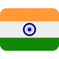
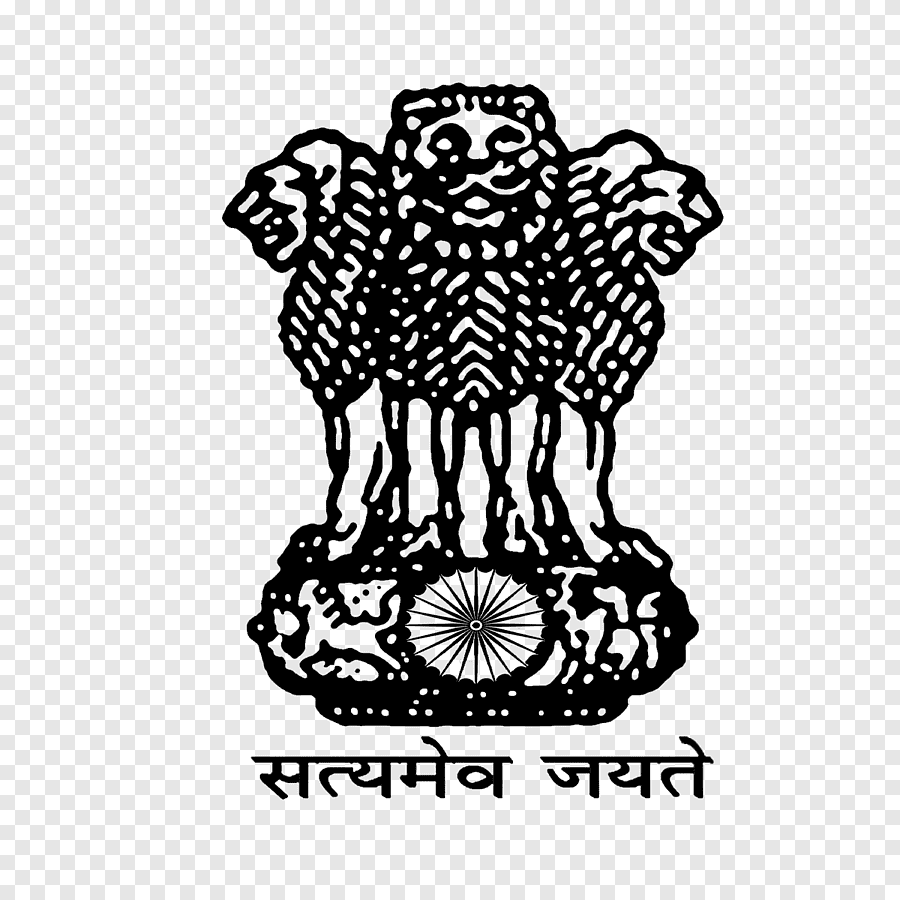
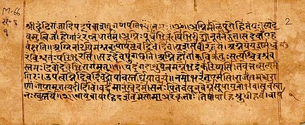
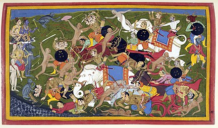
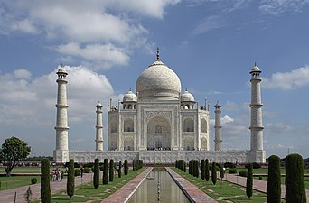

This article is about the Republic of India #India-ka-Wikipedia by krishna_Rathi
India, officially the Republic of India (Hindi: Bhārat Gaṇarājya), is a country in South Asia. It is the seventh-largest country by area, the second-most populous country, and the most populous democracy in the world. Bounded by the Indian Ocean on the south, the Arabian Sea on the southwest, and the Bay of Bengal on the southeast, it shares land borders with Pakistan to the west; China, Nepal, and Bhutan to the north; and Bangladesh and Myanmar to the east. In the Indian Ocean, India is in the vicinity of Sri Lanka and the Maldives; its Andaman and Nicobar Islands share a maritime border with Thailand, Myanmar and Indonesia.
India has been a federal republic since 1950, governed in a democratic parliamentary system. It is a pluralistic, multilingual and multi-ethnic society. India's population grew from 361 million in 1951 to 1.211 billion in 2011. During the same time, its nominal per capita income increased from US$64 annually to US$1,498, and its literacy rate from 16.6% to 74%. From being a comparatively destitute country in 1951, India has become a fast-growing major economy and a hub for information technology services, with an expanding middle class. It has a space programme which includes several planned or completed extraterrestrial missions. Indian movies, music, and spiritual teachings play an increasing role in global culture. India has substantially reduced its rate of poverty, though at the cost of increasing economic inequality. India is a nuclear-weapon state, which ranks high in military expenditure. It has disputes over Kashmir with its neighbours, Pakistan and China, unresolved since the mid-20th century. Among the socio-economic challenges India faces are gender inequality, child malnutrition, and rising levels of air pollution. India's land is megadiverse, with four biodiversity hotspots. Its forest cover comprises 21.7% of its area. India's wildlife, which has traditionally been viewed with tolerance in India's culture, is supported among these forests, and elsewhere, in protected habitats.
Country Profile

Destination India, a Nations Online country profile on the vast nation in South and Central Asia that occupies most of the Indian subcontinent.
The country borders the Himalayas in the north, the Arabian Sea in the west, the Bay of Bengal in the east, and the Laccadive Sea in the south. India shares borders with Bangladesh, Bhutan, Myanmar (Burma), China (Xizang - Tibet Autonomous Region), Nepal, and Pakistan, and it shares maritime borders with Indonesia, the Maldives, Sri Lanka, and Thailand.
India is the second-most populous country in the world (after China), with an estimated population of 1.37 billion people (in 2020). The country is subdivided into 29 states and seven Union Territories.
With an area of 3,287,263 km², India is the 7th largest country in the world, about one-third the size of the USA.
Capital and largest urban area of India is (New) Delhi; the second largest city is Mumbai. The official languages are Hindi-Urdu and English (the Indian Constitution lists 22 recognized languages).
The Indus Valley civilization, one of the oldest in the world, goes back at least 5,000 years.
Arab incursions starting in the 8th century and Turkish in the 12th were followed by European traders beginning in the late 15th century. By the 19th century, Britain had assumed political control of virtually all Indian lands.
Nonviolent resistance to British colonialism under Mohandas GANDHI and Jawaharlal NEHRU led to India's independence in 1947.
The subcontinent was divided into the secular state of India and the smaller Muslim state of Pakistan. A third war between the two countries in 1971 resulted in East Pakistan becoming the separate nation of Bangladesh.
Fundamental concerns in India include the ongoing dispute with Pakistan over Kashmir, massive overpopulation, environmental degradation, extensive poverty, and ethnic strife, all this despite impressive gains in economic investment and output.
National Symbols of India
The Republic of India has several official national symbols including a historical document, a flag, an emblem, an anthem, a memorial tower as well as several national heroes. The design of the national flag was officially adopted by the Constituent Assembly just before independence, on 22 July in 1947 Other symbols that were designated on various occasions include the national animal, bird, fruit and tree.
National Flag
The National Flag of India (Hindi: Tiraṅgā) is a horizontal rectangular tricolour of India saffron, white and India green; with the Ashoka Chakra, a 24-spoke wheel, in navy blue at its centre. It was adopted in its present form during a meeting of the Constituent Assembly held on 22 July 1947, and it became the official flag of the Dominion of India on 15 August 1947. The flag was subsequently retained as that of the Republic of India. In India, the term "tricolour" almost always refers to the Indian national flag. The flag is based on the Swaraj flag, a flag of the Indian National Congress designed by Pingali Venkayya.
By law, the flag is to be made of khadi, a special type of hand-spun cloth or silk, made popular by Mahatma Gandhi. The manufacturing process and specifications for the flag are laid out by the Bureau of Indian Standards. The right to manufacture the flag is held by the Khadi Development and Village Industries Commission, who allocates it to regional groups. As of 2009, the Karnataka Khadi Gramodyoga Samyukta Sangha has been the sole manufacturer of the flag.
National Emblem

The State Emblem of India is the national emblem of India and is used by the union government, many state governments and government agencies. The emblem is an adaptation of the Lion Capital of Ashoka, a statue from 280 BCE. The statue is a dimensional emblem showing four lions. It became the emblem of the Dominion of India in December 1947, and later the emblem of the Republic of India.
The emblem forms a part of the official letterhead of the Government of India and appears on all Indian currency as well. It also functions as the national emblem of India in many places and appears prominently on Indian passports. The Ashoka Chakra (Ashoka wheel) on its base features in the centre of the national flag of India.
The usage of the emblem is regulated and restricted under State Emblem of India (Prohibition of Improper Use) Act, 2005 under which, no individual or private organisation is permitted to use the emblem for official correspondence.
National Anthem
Jana Gana Mana is the national anthem of India. It was originally composed as Bharoto Bhagyo Bidhata in Bengali by polymath Rabindranath Tagore. The first stanza of the song Bharoto Bhagyo Bidhata was adopted by the Constituent Assembly of India as the National Anthem on 24 January 1950. A formal rendition of the national anthem takes approximately 52 seconds. A shortened version consisting of the first and last lines (and taking about 20 seconds to play) is also staged occasionally. It was first publicly sung on 27 December 1911 at the Calcutta (now Kolkata) Session of the Indian National Congress.
If put forwards succinctly, the National Anthem conveys the spirit of pluralism or in more popular term the concept of ‘Unity in Diversity’, which lies at the core of India’s cultural heritage.
The poem was first publicly recited on the second day of the annual session of the Indian National Congress in Calcutta (now Kolkata) on 27 December 1911. Then, it was followed in January 1912 at the annual event of the Adi Brahmo Samaj, however, it was largely unknown except to the readers of the Adi Brahmo Samaj journal, Tattwabodhini Patrika. The poem was published in January 1912, under the title Bharat Bhagya Bidhata in the Tatwabodhini Patrika, which was the official publication of the Brahmo Samaj with Tagore then the Editor.
n 1912, the song was performed by Sarala Devi Chaudhurani, Tagore's niece, along with the group of school students, in front of prominent Congress members like Bishan Narayan Dhar, Indian National Congress President, and Ambika Charan Majumdar.
Outside of Calcutta, the song was first sung by the bard himself at a session in Besant Theosophical College in Madanapalle, Andhra Pradesh on 28 February 1919 when Tagore visited the college and sung the song. The song enthralled the college students while Margaret Cousins, then vice-principal of the college (also an expert in European music and wife of Irish poet James Cousins), both requested Tagore to create an English translation of the song and set down the musical notation to the national anthem, which is followed only when the song is sung in the original slow rendition style. Tagore translated the work into English while at the college on 28 February 1919, titled The Morning Song of India. The college adopted Tagore's translation of the song as their prayer song which is sung till today.
Geography
India is situated north of the equator between 8°4' north to 37°6' north latitude and 68°7' east to 97°25' east longitude. It is the seventh-largest country in the world, with a total area of 3,287,263 square kilometres (1,269,219 sq mi). India measures 3,214 km (1,997 mi) from north to south and 2,933 km (1,822 mi) from east to west. It has a land frontier of 15,200 km (9,445 mi) and a coastline of 7,516.6 km (4,671 mi).
On the south, India projects into and is bounded by the Indian Ocean—in particular, by the Arabian Sea on the west, the Lakshadweep Sea to the southwest, the Bay of Bengal on the east, and the Indian Ocean proper to the south. The Palk Strait and Gulf of Mannar separate India from Sri Lanka to its immediate southeast, and the Maldives are some 125 kilometres (78 mi) to the south of India's Lakshadweep Islands across the Eight Degree Channel. India's Andaman and Nicobar Islands, some 1,200 kilometres (750 mi) southeast of the mainland, share maritime borders with Myanmar, Thailand and Indonesia. Kanyakumari at 8°4′41″N and 77°55′230″E is the southernmost tip of the Indian mainland, while the southernmost point in India is Indira Point on Great Nicobar Island. The northernmost point which is under Indian administration is Indira Col, Siachen Glacie India's territorial waters extend into the sea to a distance of 12 nautical miles (13.8 mi; 22.2 km) from the coast baseline. India has the 18th largest Exclusive Economic Zone of 2,305,143 km2 (890,021 sq mi).
The northern frontiers of India are defined largely by the Himalayan mountain range, where the country borders China, Bhutan, and Nepal. Its western border with Pakistan lies in the Karakoram range, Punjab Plains, the Thar Desert and the Rann of Kutch salt marshes. In the far northeast, the Chin Hills and Kachin Hills, deeply forested mountainous regions, separate India from Burma. On the east, its border with Bangladesh is largely defined by the Khasi Hills and Mizo Hills, and the watershed region of the Indo-Gangetic Plain.
Currency
The Indian rupee (symbol: ₹; code: INR) is the official currency of India. The rupee is subdivided into 100 paise (singular: paisa), though as of 2019, coins of denomination of 1 rupee is the lowest value in use. The issuance of the currency is controlled by the Reserve Bank of India. The Reserve Bank manages currency in India and derives its role in currency management on the basis of the Reserve Bank of India Act, 1934.
In 2010, a new rupee sign (₹) was officially adopted. It was derived from the combination of the Devanagari consonant "र" (ra) and the Latin capital letter "R" without its vertical bar (similar to the R rotunda). The parallel lines at the top (with white space between them) are said to make an allusion to the tricolour Indian flag, and also depict an equality sign that symbolises the nation's desire to reduce economic disparity. The first series of coins with the new rupee sign started in circulation on 8 July 2011. Before this, India used "₨" and "Re" as the symbols for multiple rupees and one rupee, respectively.
On 8 November 2016, the Government of India announced the demonetisation of ₹500 and ₹1,000 banknotes with effect from midnight of the same day, making these notes invalid. A newly redesigned series of ₹500 banknote, in addition to a new denomination of ₹2,000 banknote is in circulation since 10 November 2016.
History


By 55,000 years ago, the first modern humans, or Homo sapiens, had arrived on the Indian subcontinent from Africa, where they had earlier evolved. The earliest known modern human remains in South Asia date to about 30,000 years ago. After 6500 BCE, evidence for domestication of food crops and animals, construction of permanent structures, and storage of agricultural surplus appeared in Mehrgarh and other sites in what is now Balochistan, Pakistan. These gradually developed into the Indus Valley Civilisation, the first urban culture in South Asia, which flourished during 2500–1900 BCE in what is now Pakistan and western India. Centred around cities such as Mohenjo-daro, Harappa, Dholavira, and Kalibangan, and relying on varied forms of subsistence, the civilisation engaged robustly in crafts production and wide-ranging trade
During the period 2000–500 BCE, many regions of the subcontinent transitioned from the Chalcolithic cultures to the Iron Age ones. The Vedas, the oldest scriptures associated with Hinduism, were composed during this period, and historians have analysed these to posit a Vedic culture in the Punjab region and the upper Gangetic Plain. Most historians also consider this period to have encompassed several waves of Indo-Aryan migration into the subcontinent from the north-west. The caste system, which created a hierarchy of priests, warriors, and free peasants, but which excluded indigenous peoples by labelling their occupations impure, arose during this period. On the Deccan Plateau, archaeological evidence from this period suggests the existence of a chiefdom stage of political organisation. In South India, a progression to sedentary life is indicated by the large number of megalithic monuments dating from this period, as well as by nearby traces of agriculture, irrigation tanks, and craft traditions.
Government
Rashtrapati Bhavan, the official residence of the President of India, was designed by British architects Edwin Lutyens and Herbert Baker for the Viceroy of India, and constructed between 1911 and 1931 during the British Raj.
India is a federation with a parliamentary system governed under the Constitution of India—the country's supreme legal document. It is a constitutional republic and representative democracy, in which "majority rule is tempered by minority rights protected by law". Federalism in India defines the power distribution between the union and the states. The Constitution of India, which came into effect on 26 January 1950, originally stated India to be a "sovereign, democratic republic;" this characterisation was amended in 1971 to "a sovereign, socialist, secular, democratic republic". India's form of government, traditionally described as "quasi-federal" with a strong centre and weak states, has grown increasingly federal since the late 1990s as a result of political, economic, and social changes
Executive: The President of India is the ceremonial head of state, who is elected indirectly for a five-year term by an electoral college comprising members of national and state legislatures. The Prime Minister of India is the head of government and exercises most executive power. Appointed by the president, the prime minister is by convention supported by the party or political alliance having a majority of seats in the lower house of parliament. The executive of the Indian government consists of the president, the vice president, and the Union Council of Ministers—with the cabinet being its executive committee—headed by the prime minister. Any minister holding a portfolio must be a member of one of the houses of parliament. In the Indian parliamentary system, the executive is subordinate to the legislature; the prime minister and their council are directly responsible to the lower house of the parliament. Civil servants act as permanent executives and all decisions of the executive are implemented by them.
Tourism

Tourism in India is important for the country's economy and is growing rapidly. The World Travel and Tourism Council calculated that tourism generated ₹16.91 lakh crore (US$220 billion) or 9.2% of India's GDP in 2018 and supported 42.673 million jobs, 8.1% of its total employment. The sector is predicted to grow at an annual rate of 6.9% to ₹32.05 lakh crore (US$430 billion) by 2028 (9.9% of GDP). In October 2015, India's medical tourism sector was estimated to be worth US$3 billion, and it is projected to grow to US$7–8 billion by 2020. In 2014, 184,298 foreign patients travelled to India to seek medical treatment.[
Over 17.9 million foreign tourists arrived in India in 2019 compared to 17.4 million in 2018, representing a growth of 3.5%. This makes India the 22th most visited nation in the world and 8th in Asia and Pacific . Domestic tourist visits to all states and union territories numbered 1,036.35 million in 2012, an increase of 16.5% from 2011. In 2014, Tamil Nadu, Maharashtra and Uttar Pradesh were the most popular states for tourists. Delhi, Mumbai, Chennai, Agra and Jaipur were the five most visited cities of India by foreign tourists during the year 2015. Worldwide, Delhi is ranked 28th by the number of foreign tourist arrivals, while Mumbai is ranked 30th, Chennai 43rd, Agra 45th, Jaipur 52nd and Kolkata 90th
The Travel and Tourism Competitiveness Report 2019 ranked India 35th out of 140 countries overall. India improved its ranking by 6 places over the 2017 report which was the greatest improvement among the top 25% of countries ranked. The report ranks the price competitiveness of India's tourism sector 13th out of 140 countries. It mentions that India has quite good air transport infrastructure (ranked 33rd), particularly given the country's stage of development, and reasonable ground and port infrastructure (ranked 28th). The country also scores high on natural resources (ranked 14th), and cultural resources and business travel (ranked 8th).[ However, some other aspects of its tourism infrastructure remain somewhat underdeveloped.[ The nation has many hotel rooms per capita by international comparison and low ATM penetration.[ The World Tourism Organization reported that India's receipts from tourism during 2012 ranked 16th in the world, and 7th among Asian and Pacific countries.
Economy
According to the International Monetary Fund (IMF), the Indian economy in 2020 was nominally worth $2.7 trillion; it is the sixth-largest economy by market exchange rates, and is around $8.9 trillion, the third-largest by purchasing power parity (PPP). With its average annual GDP growth rate of 5.8% over the past two decades, and reaching 6.1% during 2011–2012, India is one of the world's fastest-growing economies. However, the country ranks 139th in the world in nominal GDP per capita and 118th in GDP per capita at PPP. Until 1991, all Indian governments followed protectionist policies that were influenced by socialist economics. Widespread state intervention and regulation largely walled the economy off from the outside world. An acute balance of payments crisis in 1991 forced the nation to liberalise its economy; since then it has moved slowly towards a free-market system by emphasising both foreign trade and direct investment inflows. India has been a member of WTO since 1 January 1995
The 522-million-worker Indian labour force is the world's second-largest, as of 2017. The service sector makes up 55.6% of GDP, the industrial sector 26.3% and the agricultural sector 18.1%. India's foreign exchange remittances of US$70 billion in 2014, the largest in the world, were contributed to its economy by 25 million Indians working in foreign countries. Major agricultural products include: rice, wheat, oilseed, cotton, jute, tea, sugarcane, and potatoes. Major industries include: textiles, telecommunications, chemicals, pharmaceuticals, biotechnology, food processing, steel, transport equipment, cement, mining, petroleum, machinery, and software. In 2006, the share of external trade in India's GDP stood at 24%, up from 6% in 1985. In 2008, India's share of world trade was 1.68%; In 2011, India was the world's tenth-largest importer and the nineteenth-largest exporter. Major exports include: petroleum products, textile goods, jewellery, software, engineering goods, chemicals, and manufactured leather goods. Major imports include: crude oil, machinery, gems, fertiliser, and chemicals. Between 2001 and 2011, the contribution of petrochemical and engineering goods to total exports grew from 14% to 42%. India was the world's second largest textile exporter after China in the 2013 calendar year.
Language and Religion
ndia is the world's second-most populous country. Its population grew by 17.64% from 2001 to 2011, compared to 21.54% growth in the previous decade (1991–2001). The human sex ratio, according to the 2011 census, is 940 females per 1,000 males. The median age was 28.7 as of 2020. The first post-colonial census, conducted in 1951, counted 361 million people. Medical advances made in the last 50 years as well as increased agricultural productivity brought about by the "Green Revolution" have caused India's population to grow rapidly.
The average life expectancy in India is at 68 years—69.6 years for women, 67.3 years for men. There are around 50 physicians per 100,000 Indians. Migration from rural to urban areas has been an important dynamic in India's recent history. The number of people living in urban areas grew by 31.2% between 1991 and 2001. Yet, in 2001, over 70% still lived in rural areas. The level of urbanisation increased further from 27.81% in the 2001 Census to 31.16% in the 2011 Census. The slowing down of the overall population growth rate was due to the sharp decline in the growth rate in rural areas since 1991. According to the 2011 census, there are 53 million-plus urban agglomerations in India; among them Mumbai, Delhi, Kolkata, Chennai, Bangalore, Hyderabad and Ahmedabad, in decreasing order by population. The literacy rate in 2011 was 74.04%: 65.46% among females and 82.14% among males. The rural-urban literacy gap, which was 21.2 percentage points in 2001, dropped to 16.1 percentage points in 2011. The improvement in the rural literacy rate is twice that of urban areas. Kerala is the most literate state with 93.91% literacy; while Bihar the least with 63.82%.
Culture
ndian cultural history spans more than 4,500 years. During the Vedic period (c. 1700 BCE – c. 500 BCE), the foundations of Hindu philosophy, mythology, theology and literature were laid, and many beliefs and practices which still exist today, such as dhárma, kárma, yóga, and mokṣa, were established India is notable for its religious diversity, with Hinduism, Buddhism, Sikhism, Islam, Christianity, and Jainism among the nation's major religions. The predominant religion, Hinduism, has been shaped by various historical schools of thought, including those of the Upanishads, the Yoga Sutras, the Bhakti movement, and by Buddhist philosophy
Ancient painting has only survived at a few sites, of which the crowded scenes of court life in the Ajanta Caves are by far the most important, but it was evidently highly developed, and is mentioned as a courtly accomplishment in Gupta times. Painted manuscripts of religious texts survive from Eastern India about the 10th century onwards, most of the earliest being Buddhist and later Jain. No doubt the style of these was used in larger paintings. The Persian-derived Deccan painting, starting just before the Mughal miniature, between them give the first large body of secular painting, with an emphasis on portraits, and the recording of princely pleasures and wars. The style spread to Hindu courts, especially among the Rajputs, and developed a variety of styles, with the smaller courts often the most innovative, with figures such as Nihâl Chand and Nainsukh. As a market developed among European residents, it was supplied by Company painting by Indian artists with considerable Western influence. In the 19th century, cheap Kalighat paintings of gods and everyday life, done on paper, were urban folk art from Calcutta, which later saw the Bengal School of Art, reflecting the art colleges founded by the British, the first movement in modern Indian painting.
Much of Indian architecture, including the Taj Mahal, other works of Mughal architecture, and South Indian architecture, blends ancient local traditions with imported styles. Vernacular architecture is also regional in its flavours. Vastu shastra, literally "science of construction" or "architecture" and ascribed to Mamuni Mayan, explores how the laws of nature affect human dwellings; it employs precise geometry and directional alignments to reflect perceived cosmic constructs. As applied in Hindu temple architecture, it is influenced by the Shilpa Shastras, a series of foundational texts whose basic mythological form is the Vastu-Purusha mandala, a square that embodied the "absolute". The Taj Mahal, built in Agra between 1631 and 1648 by orders of Emperor Shah Jahan in memory of his wife, has been described in the UNESCO World Heritage List as "the jewel of Muslim art in India and one of the universally admired masterpieces of the world's heritage". Indo-Saracenic Revival architecture, developed by the British in the late 19th century, drew on Indo-Islamic architecture.